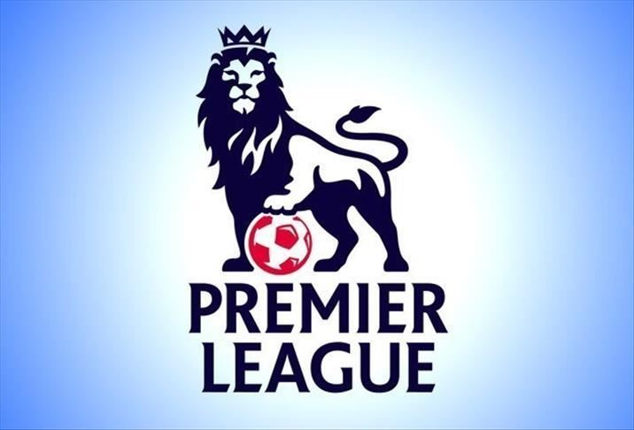

The Premier League is the soccer league in England.The most competitive league in the world, full of upsets, drama, and transfers. There is action every matchday. The Premier League is not just abour the teams however, the fans are the backbone of teams. Fans alwasy create creative chants to support their team, and are always the loudest in the stadium.